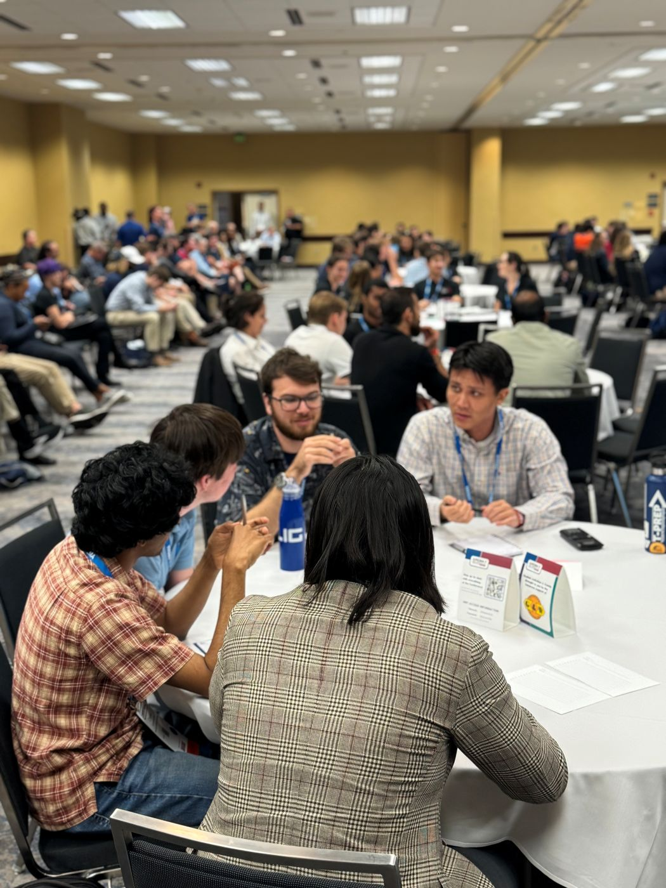
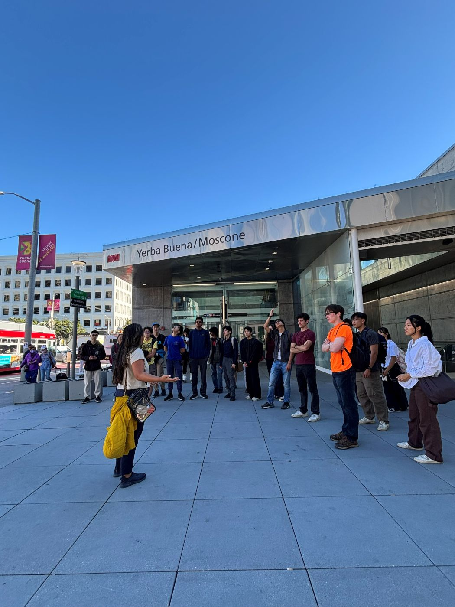
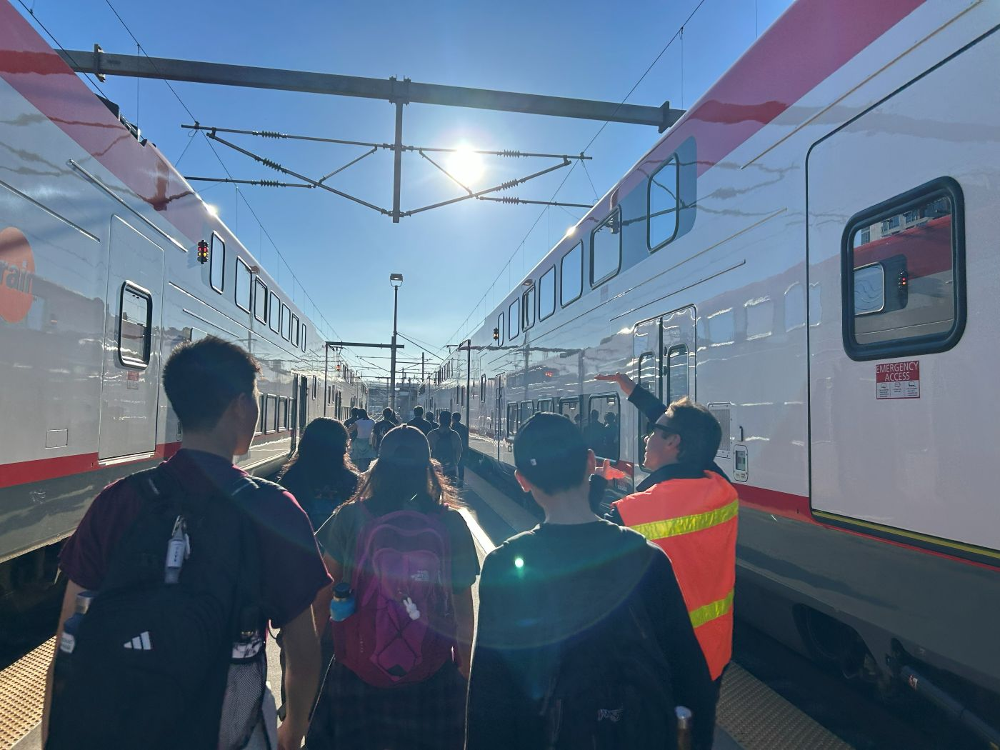
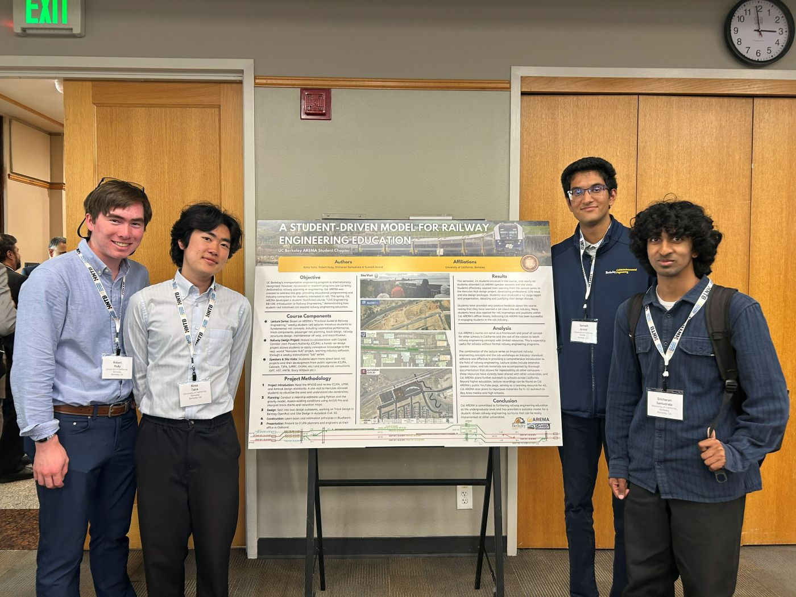
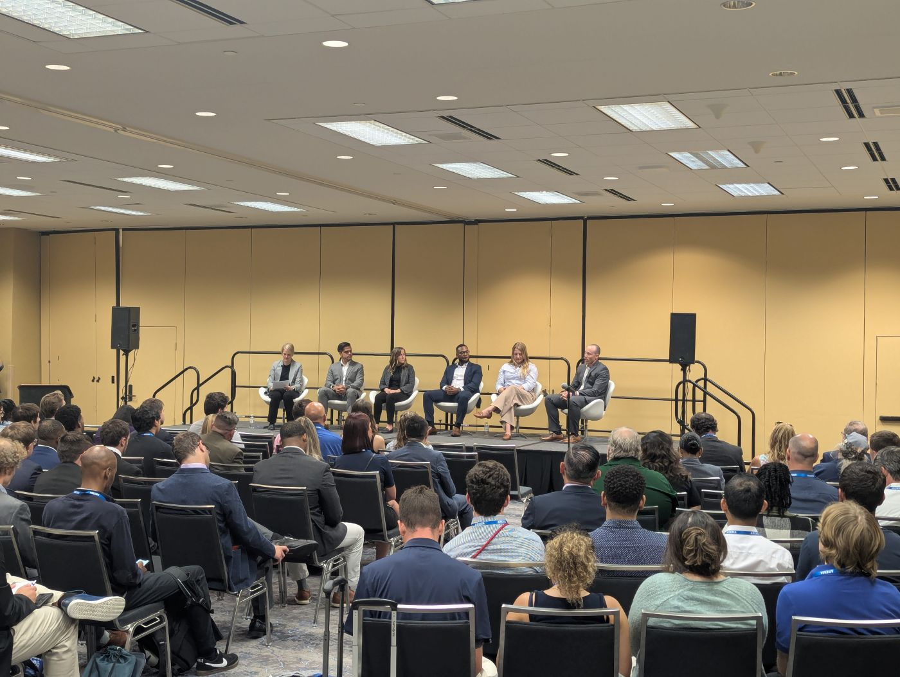
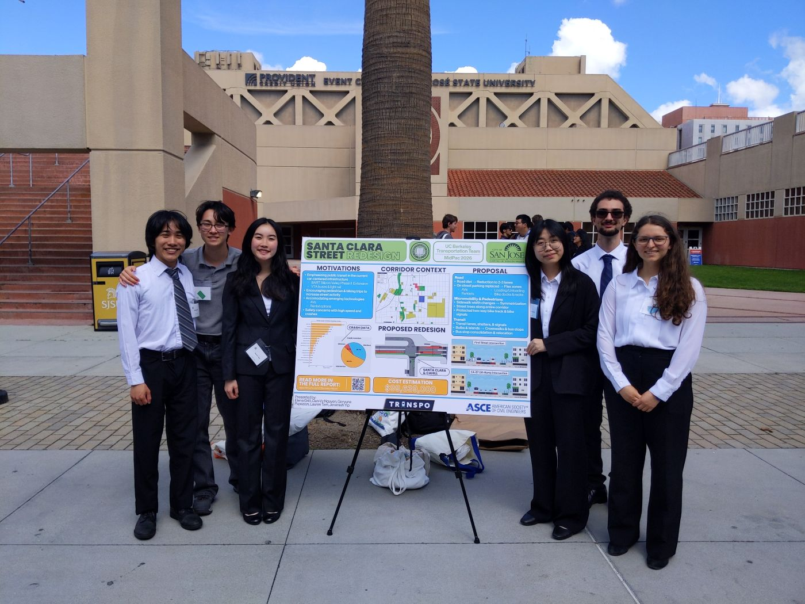

UC Berkeley, February 19-21, 2027
The ITE Western District Student Leadership Summit brings together Western District Student Chapters, and the transportation professionals who inspire them, for three days at the University of California, Berkeley.
Why This Summit
Three days at UC Berkeley, including a full day of technical workshops and presentations, site visits, and leadership training designed by students, for students.
A full day of hands-on technical sessions and presentations covering public transit planning, complete streets design, traffic operations, data science, emergency evacuation, airports, and more.
Meet practicing engineers and leaders from Caltrans, BART, MTC, and Western District firms.
Tour transit, freight, and active-transportation infrastructure both in operation and construction phases across the Bay.
Build the skills to lead your ITE community and step confidently into the transportation profession.
The Route
This page is loading. Itinerary is to come!
Who Should Attend
Undergraduate and graduate ITE student chapter members from across the Western District.
Practicing engineers, planners, and transportation staff in the discipline.
No prior summit experience needed, just curiosity about how people and goods move. Please contact your local student chapter to get involved.
Conference Program
With 300+ students interested in transportation and professionals representing their companies and agencies.
On a wide range of topics: public transit planning, complete streets design, traffic operations, data science, emergency evacuation, airports, and more.
To transportation facilities and projects around the Bay Area.
Including a networking mixer, interview/resume workshops, roundtable discussions, and ITE Traffic Bowl.
With a notable keynote speaker.





